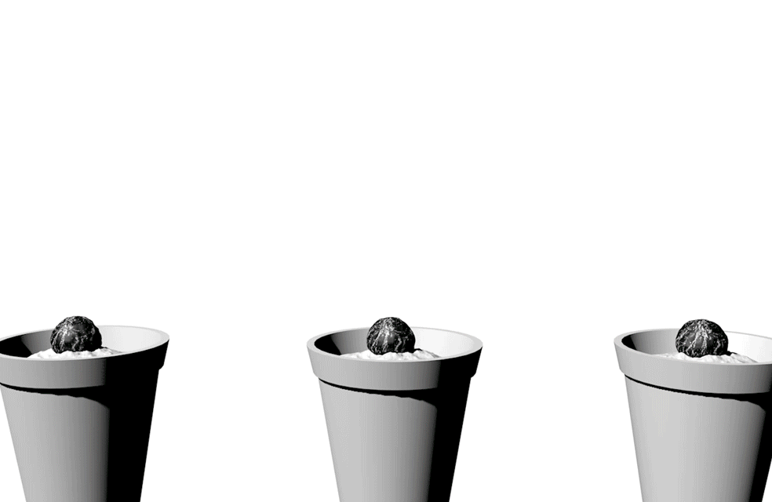
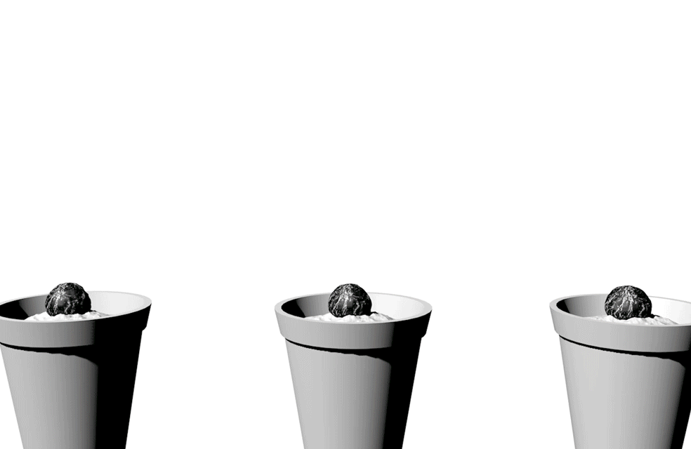
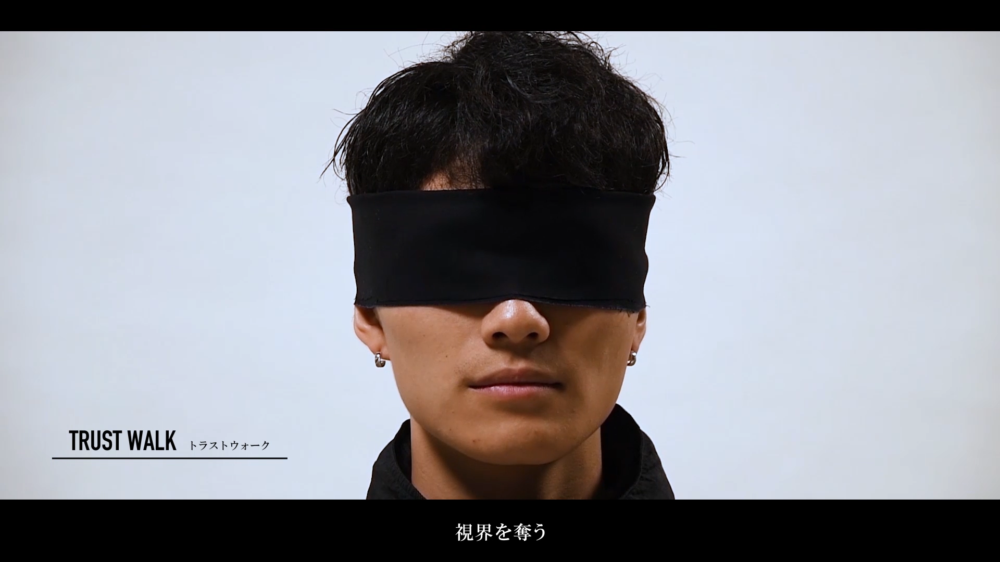
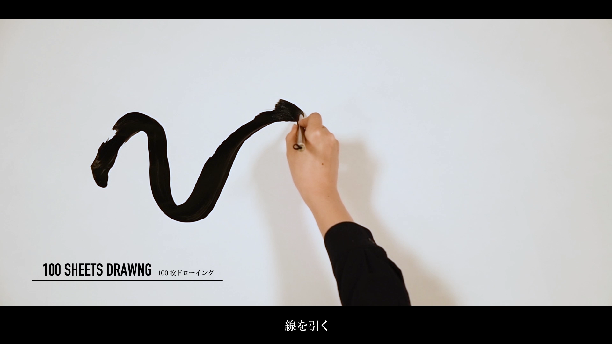
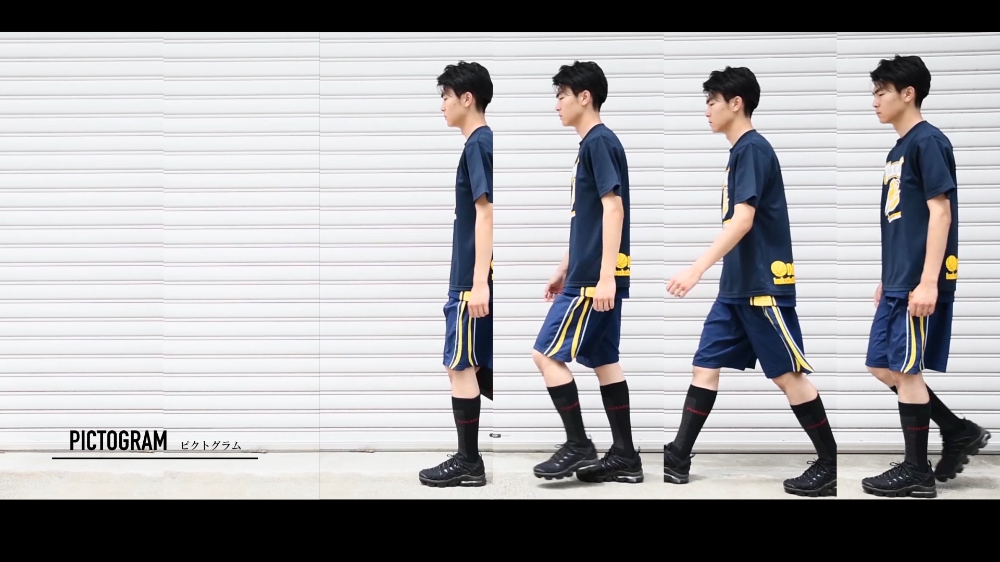
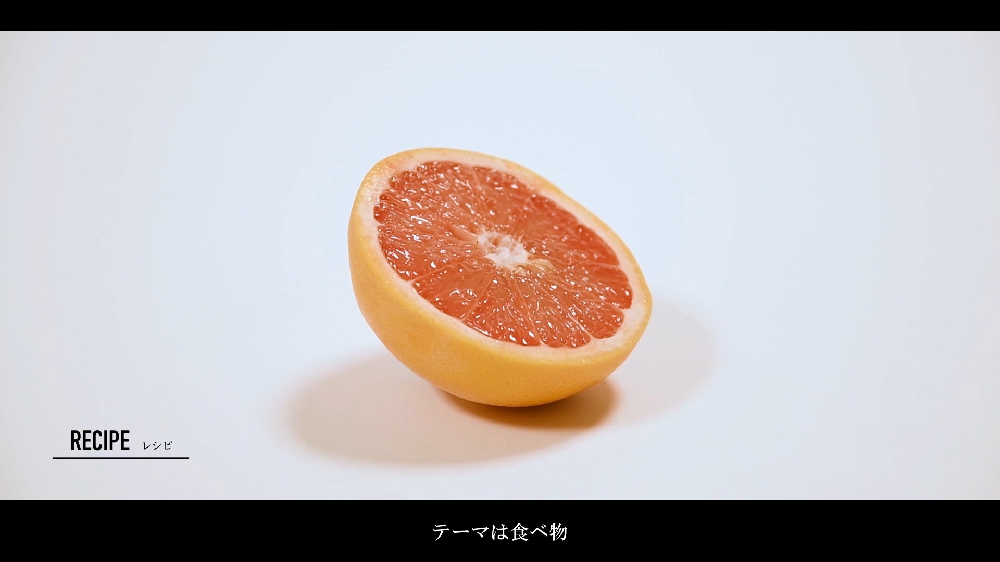
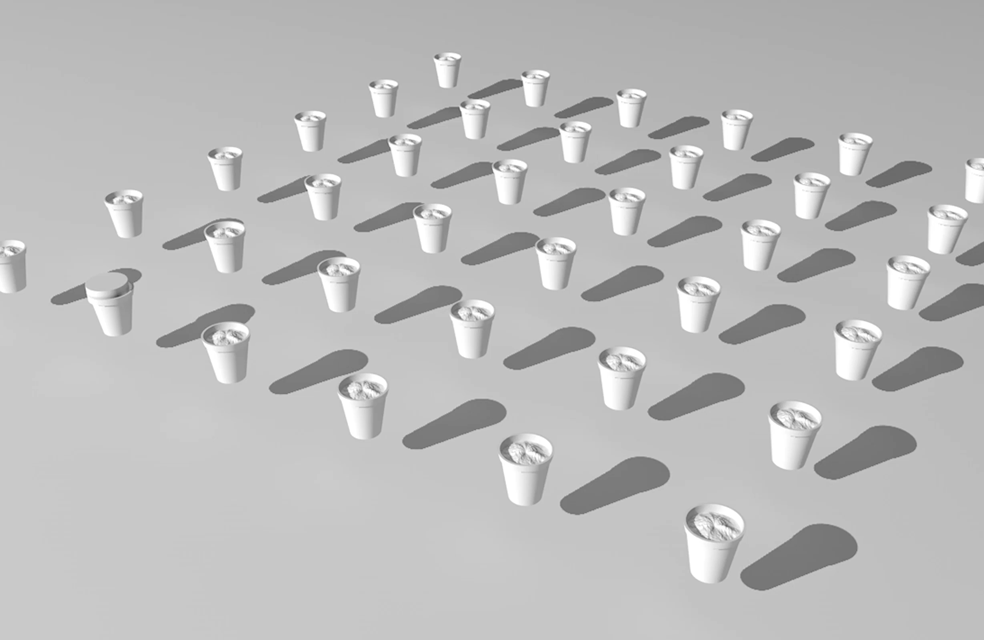
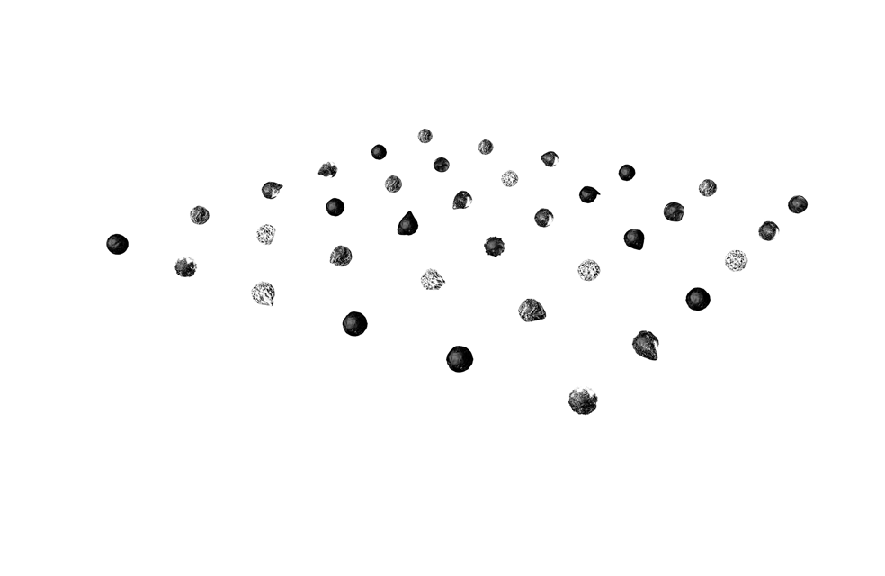
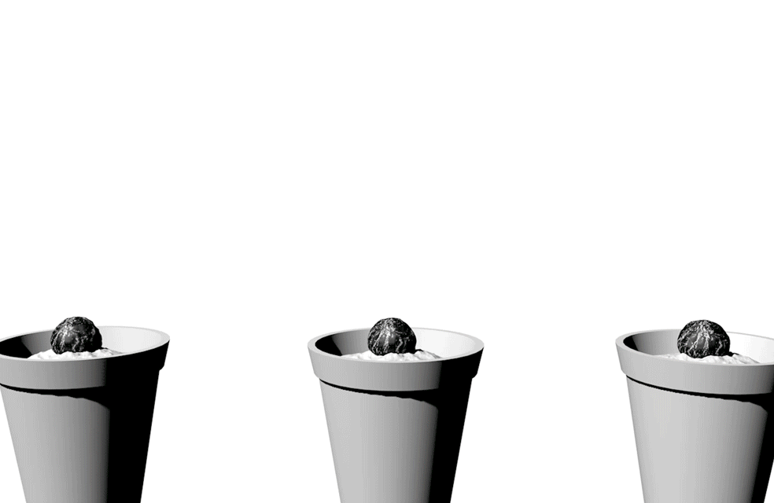

 
 

武蔵野美術大学視覚伝達デザイン学科オープンキャンパス2018にて、映像班として授業紹介映像とSNS用の宣伝映像を作成しました。
授業紹介映像では、視覚伝達デザイン学科の目玉授業である、トラストウォーク、100枚ドローイング、ピクトグラム、レシピの授業を、
わかりやすく、楽しく、かつ視覚伝達デザイン学科に入りたいと思ってもらえるような映像を目指し作成、Youtubeにて公開しました。
SNS用の宣伝映像では、「視る、視る、実る」というコンセプトの基、
植木鉢に入ったタネがどんどんと成長していく様子を５つの映像に分け、フル3DCDで作成しました。
この映像はオープンキャンパスの4週間前から、１週間に１つのペースで公式Twitterで公開されました。